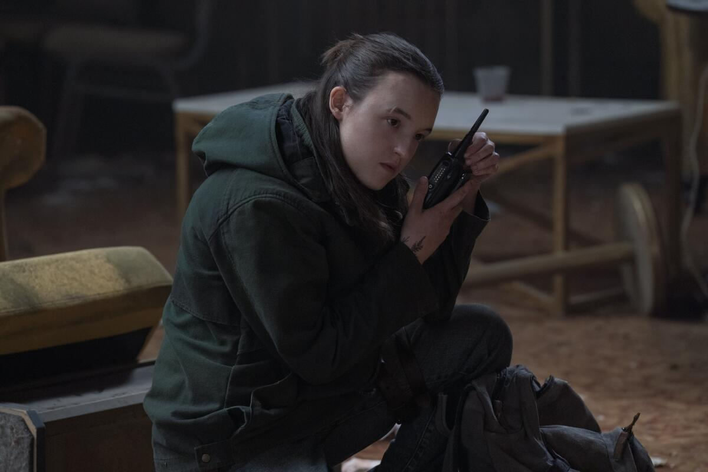

Let’s not sugarcoat it — Season 1 of The Last of Us was television royalty. Raw emotion. Mushroom zombies. Pedro Pascal being daddy in every scene. So when HBO dropped Season 2, the internet collectively screamed. And then… we watched. And we sighed. And some of us rage-tweeted. Why? Buckle up.
We open post-firefly meltdown. Ellie is grappling with guilt and trauma, and Joel is doing his best ‚Äúeverything‚Äôs fine‚Äù routine (bless his delusional soul). Emotionally, it starts strong ‚Äî quiet grief, tense glances, and that gut-punch of unresolved trauma. But then the pacing goes feral. One moment you‚Äôre teary-eyed, the next you‚Äôre stuck in a flashback with barely a heads-up. Girl, I needed a moment. Enter Abby. Yes, that Abby. Gym rat. War child. Rage incarnate. And honestly? She shook the fandom harder than the cordyceps. She‚Äôs introduced as this human wrecking ball, all beefed up and brooding ‚Äî and the show dares to say, ‚Äúyou‚Äôll sympathize with her by the end.‚Äù Spoiler: some people never did. Now here‚Äôs where the show gets brave and slightly annoying ‚Äî it shifts focus. Instead of Joel and Ellie‚Äôs tragic, beautiful dynamic, we‚Äôre suddenly deep in Abby‚Äôs side quests. You will learn about her trauma, her motivations, and every protein shake she ever drank. She‚Äôs complex, sure. But was it necessary to derail the whole narrative? Debatable. Ellie, meanwhile, is on her angsty slow burn. She‚Äôs colder, quieter, and visibly haunted. Bella Ramsey? She acts ‚Äî no shade. But her storyline feels stretched. The show leans hard into introspection, but forgets that action was what made Season 1 iconic. I came for emotional devastation and infected chaos. Instead, I got a moody hiking simulator with the occasional bloat of tension. Pedro Pascal‚Äôs Joel? Baby, he‚Äôs barely in this one. Which is kind of the point ‚Äî but also, rude. His presence is more like a sad memory with great hair. His fate? Let‚Äôs just say‚Ķ they did it. And it‚Äôs messy. And the internet is still not over it. Now, let‚Äôs talk structure. The show loves its time jumps. Flashbacks, dream sequences, ‚Äú3 days earlier‚Äù pop-ups ‚Äî it‚Äôs giving Chronologically Confused: The Series. Sure, it‚Äôs artistic. But also disorienting. Like, am I watching a post-apocalyptic love letter or a tragic fan edit with HBO money? Visually? Flawless. The sets are bleak and beautiful. The infected are still crusty and gross in the best way. There‚Äôs a scene involving an abandoned mall that had me nostalgic and terrified ‚Äî 10/10. But then it‚Äôll cut to another 12 minutes of Abby staring at a wall or Ellie journaling sadness, and suddenly I‚Äôm rethinking my popcorn budget.
*The Last of Us – Season 2* is bold, brooding, and beautifully shot — but also bloated and burdened by its own ambition. It tries to be *art*, but forgets to entertain. It swings big, and while some hits land, others just bruise the pacing.
Is it bad? No.
Is it perfect? Absolutely not.
Is it still worth watching? If you're emotionally stable and willing to wrestle with moral gray areas — go off, queen.
But if you're here for Daddy Pascal and zombie carnage… this ain’t it.